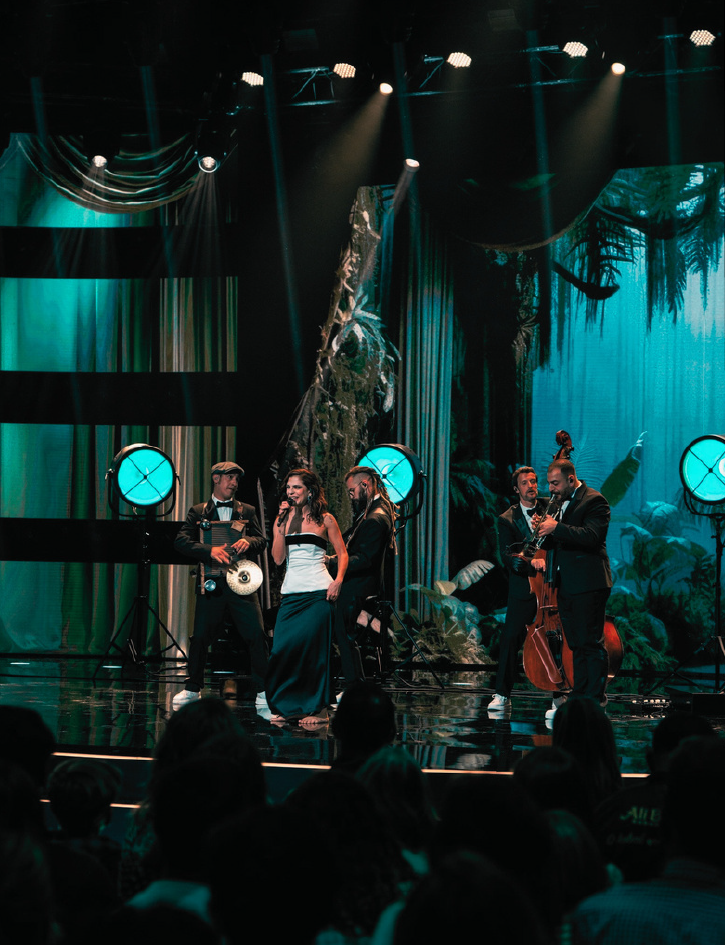
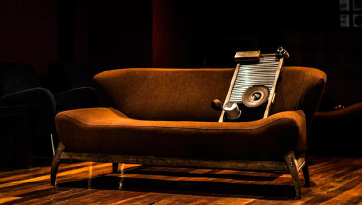
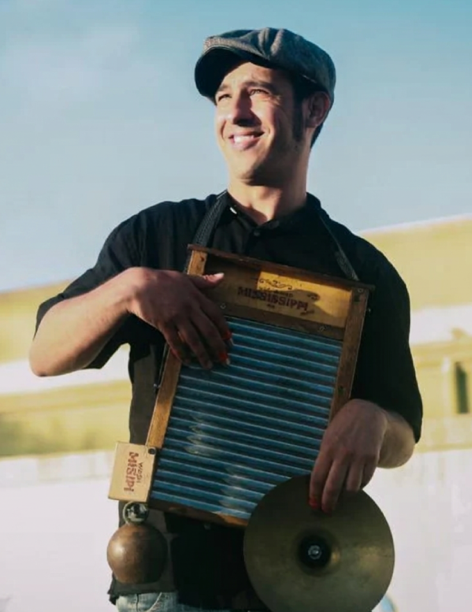

Gringo's Washboard BandElectronic Press Kit
A Gringo's Washboard Band
{{#lang pt}}A música que nasceu nas margens do rio Mississippi transcende o blues e o jazz e ecoa pelo universo musical mundial.{{/lang}} {{#lang en}}The music born on the banks of the Mississippi River goes beyond blues and jazz and echoes across the world of music.{{/lang}}
{{#lang pt}}É essa essência que a Gringo's WB traz, com um olhar inovador e as raízes preservadas, transportando o público numa verdadeira viagem às margens do Mississippi.{{/lang}} {{#lang en}}That is the essence Gringo's WB brings, with a fresh outlook and its roots intact, taking the audience on a true journey to the banks of the Mississippi.{{/lang}}
{{#lang pt}}Criada no Brasil em 2013, a Gringo's WB carrega o espírito e a história dos seus fundadores, artistas que ajudaram a construir a música como ela é hoje.{{/lang}} {{#lang en}}Founded in Brazil in 2013, Gringo's WB carries the spirit and history of its founders, artists who helped shape the music as it is today.{{/lang}}
{{#lang pt}}Com energia, carisma e uma atuação impecável, a banda firmou-se como um nome único no cenário musical português.{{/lang}} {{#lang en}}With energy, charisma and flawless performances, the band has established itself as a unique name on the Portuguese music scene.{{/lang}}

{{#lang pt}}Trajetória{{/lang}}{{#lang en}}History{{/lang}}

{{#lang pt}}Nascida em 2013 no Brasil, a Gringo's WB conta com uma sólida trajetória e vasta experiência de palco.{{/lang}} {{#lang en}}Born in Brazil in 2013, Gringo's WB has a solid track record and extensive stage experience.{{/lang}}
{{#lang pt}}A banda apresentou-se em diversos festivais de jazz e blues por toda a América do Sul e ganhou projeção massiva em 2016 ao destacar-se no programa Superstar da Rede Globo, além de somar várias aparições na televisão brasileira.{{/lang}} {{#lang en}}The band has played many jazz and blues festivals across South America and gained massive exposure in 2016 when it stood out on Superstar on Rede Globo, along with several other appearances on Brazilian television.{{/lang}}
{{#lang pt}}Já em Portugal, o grupo consolidou o seu sucesso ao sagrar-se vencedor do Portugal Blues Challenge em 2023 e ao brilhar como semifinalista do Got Talent Portugal em 2026, conquistas que garantiram uma enorme visibilidade e reconhecimento no cenário nacional.{{/lang}} {{#lang en}}In Portugal, the group consolidated its success by winning the Portugal Blues Challenge in 2023 and shining as a Got Talent Portugal semi-finalist in 2026 — achievements that brought it huge visibility and recognition across the country.{{/lang}}
Root of the Oppressed
{{#lang pt}}O espetáculo Root of the Oppressed propõe uma imersão nas narrativas negligenciadas da música negra americana. Longe dos clichés comerciais, o concerto traz à tona a crueza da segregação racial, da misoginia e do trabalho análogo à escravidão, realidades históricas que ainda ecoam na sociedade contemporânea.{{/lang}} {{#lang en}}The Root of the Oppressed show is an immersion in the neglected narratives of African American music. Far from commercial clichés, the concert brings to light the harshness of racial segregation, misogyny and slavery-like labour, historical realities that still echo in today's society.{{/lang}}
{{#lang pt}}Sob a assinatura da Gringo's WB, o blues e o jazz vocal contemporâneo fundem-se com o ragtime, o country blues e o folk numa abordagem minimalista. A sonoridade do projeto rompe com o tradicional ao abdicar da bateria e colocar a washboard na pulsação rítmica e no centro da cena, dividindo a frente do palco com a voz.{{/lang}} {{#lang en}}Under the Gringo's WB signature, blues and contemporary vocal jazz blend with ragtime, country blues and folk in a minimalist approach. The project's sound breaks with tradition by leaving out the drums and putting the washboard at the rhythmic heart and centre stage, sharing the front of the stage with the voice.{{/lang}}
{{#lang pt}}Através do contraste, da ironia e do drama, as canções são meticulosamente reinventadas. O repertório viaja desde o pioneirismo de Ida Cox e Bessie Smith, que quebravam paradigmas de género, até à melancolia profunda de Charley Patton e Rev. Gary Davis. Uma performance de forte conexão humana e energia cénica, feita para servir de alicerce aos amantes da música.{{/lang}} {{#lang en}}Through contrast, irony and drama, the songs are meticulously reinvented. The repertoire travels from the pioneering work of Ida Cox and Bessie Smith, who broke gender paradigms, to the deep melancholy of Charley Patton and Rev. Gary Davis. A performance of strong human connection and stage energy, made to be a cornerstone for music lovers.{{/lang}}

Root of the Oppressed {{#lang pt}}ao vivo{{/lang}}{{#lang en}}live{{/lang}}

{{#lang pt}}Especificações técnicas{{/lang}}{{#lang en}}Technical specifications{{/lang}}
- Line-up
- {{#lang pt}}5 músicos em palco: voz, washboard, trompete, contrabaixo e guitarra.{{/lang}}{{#lang en}}5 musicians on stage: vocals, washboard, trumpet, double bass and guitar.{{/lang}}
- {{#lang pt}}Duração do espetáculo{{/lang}}{{#lang en}}Show length{{/lang}}
- {{#lang pt}}90 minutos.{{/lang}}{{#lang en}}90 minutes.{{/lang}}
- {{#lang pt}}Classificação etária{{/lang}}{{#lang en}}Age rating{{/lang}}
- {{#lang pt}}Maiores de 16 anos.{{/lang}}{{#lang en}}16 and over.{{/lang}}
- {{#lang pt}}Logística de viagem{{/lang}}{{#lang en}}Travel logistics{{/lang}}
-
- {{#lang pt}}Ponto de partida: Lisboa.{{/lang}}{{#lang en}}Departure point: Lisbon.{{/lang}}
- {{#lang pt}}Quartos individuais (negociável).{{/lang}}{{#lang en}}Single rooms (negotiable).{{/lang}}
- {{#lang pt}}Refeições para os músicos e equipa (caso a equipa própria acompanhe a banda).{{/lang}}{{#lang en}}Meals for the musicians and crew (if the band's own crew travels with it).{{/lang}}
- {{#lang pt}}Rider técnico{{/lang}}{{#lang en}}Technical rider{{/lang}}
- {{#lang pt}}Disponível a pedido:{{/lang}}{{#lang en}}Available on request:{{/lang}}
